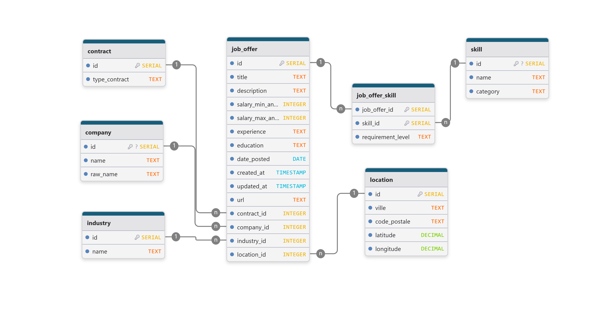

Modélisation et base PostgreSQL (France Travail)
Choix de périmètre
La base relationnelle est centrée exclusivement sur les données issues de France Travail.
Ce choix permet : - de garantir un schéma stable et reproductible, - d’éviter des divergences structurelles entre sources hétérogènes, - de faciliter l’industrialisation de la chaîne ingestion → API REST → analyses.
Les données provenant d’autres sources (ex. Welcome to the Jungle) sont exploitées en dehors de cette base relationnelle principale.
Note
Ce périmètre volontairement restreint facilite la maintenance, la documentation et l’évolution du schéma dans un contexte de recherche.
—
Vue d’ensemble du schéma
La base est organisée autour d’une table centrale représentant les offres d’emploi, enrichie par des tables de référence (sources, entreprises, compétences) et des tables de liaison.
{kind=link}
—
Entités principales
source
Table de référence décrivant la provenance des offres.
code: identifiant court de la source (ex.FT).name: nom lisible de la source.
Cette table permet d’anticiper l’ajout futur d’autres sources, sans modifier la structure de la table centrale.
company
Table des entreprises associées aux offres.
name: nom normalisé de l’entreprise.raw_name: nom brut tel que fourni par la source.
Une contrainte d’unicité est appliquée sur le nom normalisé afin de limiter la duplication des entreprises.
job_offer
Table centrale du modèle, représentant une offre d’emploi.
Champs principaux :
- référence à la source (source_id),
- référence optionnelle à l’entreprise (company_id),
- identifiants et URL d’origine,
- informations descriptives (titre, description, localisation, contrat),
- informations contextuelles (salaire, secteur, expérience, formation),
- métadonnées temporelles (date de publication, timestamps).
Cette table constitue le point d’entrée principal pour l’API et les analyses.
skill
Référentiel des compétences, partagé par l’ensemble des offres.
name: libellé de la compétence,category: type de compétence (hard,soft,language).
La contrainte d’unicité (name, category) garantit une normalisation
des compétences.
job_offer_skill
Table de liaison entre les offres et les compétences.
Elle permet :
- de représenter une relation many-to-many,
- de distinguer le niveau d’exigence (required / optional),
- de conserver la trace du champ source ayant fourni la compétence.
—
Relations entre les tables
Une offre appartient à une et une seule source (
job_offer.source_id → source.id).Une offre peut être associée à une entreprise (relation optionnelle vers
company).Une offre peut référencer plusieurs compétences, et une compétence peut apparaître dans plusieurs offres, via
job_offer_skill.
—
Contraintes et qualité des données
Plusieurs mécanismes garantissent la qualité et la cohérence des données :
Unicité des offres : une contrainte unique sur
(source_id, url)empêche l’insertion de doublons lors des ingestions successives.Intégrité référentielle : clés étrangères vers
sourceetcompany.Nettoyage automatique : suppression en cascade des relations
job_offer_skilllorsque l’offre associée est supprimée.Normalisation : les compétences sont stockées dans une table dédiée, évitant toute duplication textuelle dans
job_offer.
—
Stratégie d’ingestion dans la base
L’ingestion des données France Travail repose sur une stratégie incrémentale, transactionnelle et défensive, permettant des ré-exécutions sans duplication ni corruption des données.
L’ensemble du processus est orchestré par un pipeline Python qui enchaîne prétraitement, résolution des dépendances et écriture en base relationnelle PostgreSQL.
Ordonnancement de l’ingestion
Pour chaque offre prétraitée, l’ingestion suit l’ordre logique suivant :
1) Résolution des entités de référence
Avant l’insertion de l’offre, les entités dépendantes sont créées ou récupérées :
Entreprise : récupération ou création via une logique
get_or_createbasée sur le nom normalisé de l’entreprise.Secteur d’activité : création conditionnelle lorsque l’information est disponible.
Type de contrat : création conditionnelle à partir du libellé fourni par la source.
Localisation : création ou récupération à partir du couple
(ville, code_postal), avec enrichissement optionnel en coordonnées GPS.
Cette étape garantit que toutes les clés étrangères nécessaires sont disponibles avant l’écriture de l’offre.
2) Insertion ou mise à jour de l’offre
L’offre d’emploi est ensuite traitée dans la table centrale job_offer.
L’existence de l’offre est vérifiée à partir de son URL d’origine, utilisée comme identifiant fonctionnel.
Si l’offre existe déjà : les champs descriptifs et analytiques sont mis à jour (titre, description, salaires, expérience, formation, références aux entités associées), ainsi que le timestamp
updated_at.Si l’offre est nouvelle : une nouvelle ligne est insérée avec l’ensemble des informations disponibles.
Cette logique correspond à un upsert applicatif contrôlé, implémenté explicitement au niveau Python plutôt que via une clause SQL automatique, afin de maîtriser finement les champs mis à jour.
3) Gestion des compétences et langues
Les compétences et langues associées à l’offre sont ensuite traitées :
Chaque compétence ou langue est créée ou récupérée dans le référentiel
skillselon son nom et sa catégorie (hard,softoulanguage).Les relations entre l’offre et les compétences sont insérées dans
job_offer_skillavec indication du niveau d’exigence (required/optional).
L’insertion dans la table de liaison utilise une clause
ON CONFLICT DO NOTHING, garantissant l’absence de doublons même
lors de ré-exécutions du pipeline.
4) Gestion transactionnelle
L’ingestion est effectuée au sein d’une transaction PostgreSQL :
validation explicite (
commit) une fois toutes les offres traitées,annulation complète (
rollback) en cas d’erreur.
Ce mécanisme garantit la cohérence de la base même en cas d’interruption ou d’échec partiel du pipeline.
Garanties apportées par cette stratégie
Cette stratégie d’ingestion permet :
des ré-exécutions idempotentes du pipeline,
une ingestion incrémentale des nouvelles offres,
la mise à jour contrôlée des offres existantes,
le respect de l’intégrité référentielle,
une reproductibilité complète du processus d’ingestion.
Elle constitue le socle technique sur lequel reposent l’API REST et les analyses ultérieures.